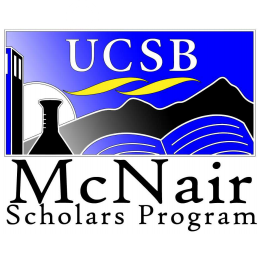
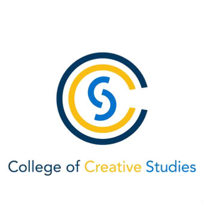
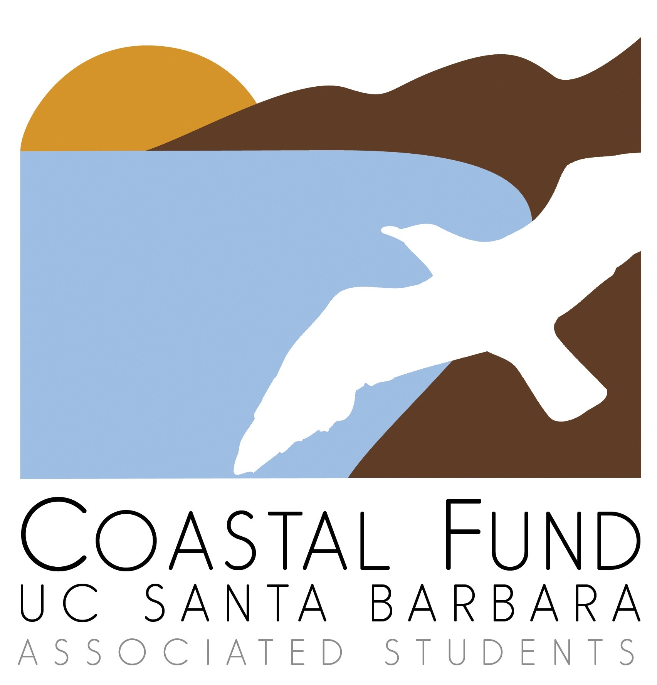
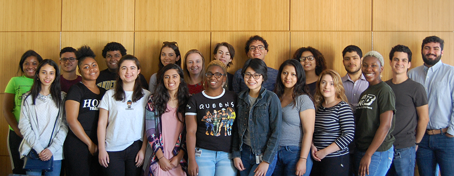
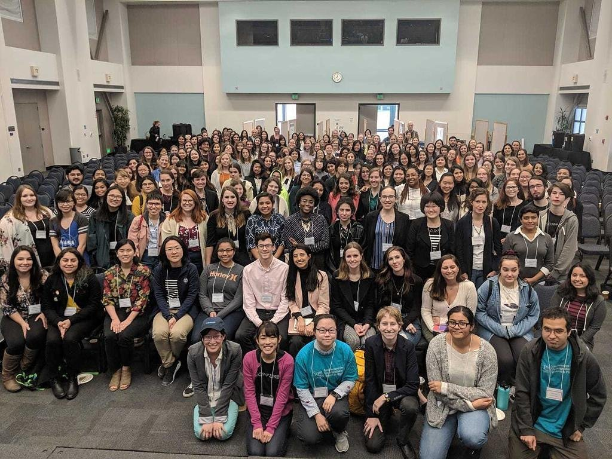

Education
Research Experience
Publications
& Media
Grants &
Fellowships
Honors &
Awards
Work Experience
Outreach &
Societies
| University of California, Santa Barbara - College of Creative Studies |
09/2016 - 07/2020 |
| B.S. Biochemistry |
| GPA 3.8 of 4.0 |
| Ponderosa High School |
08/2012 - 05/2016 |
| High School Diploma |
| University of California, Santa Barbara - Department of Chemistry and Biochemistry |
03/2018 - |
| Project: Quantum Mechanical Calculations of Vibrational Circular Dichroism Spectra |
| Principal Investigator: Kalju Kahn |
- Determined a set of computational approaches using the Gaussian 16 program most appropriate for accurate calculation of the vibrational circular dichroism spectrum of chiral molecules while minimizing computational cost.
- Developed software to automate job submission, batch creation of input files, and perform detailed analysis of large volumes of output data.
|
University of California, Santa Barbara - Cheadle Center for Biodiversity and
Ecological Restoration |
09/2019 - |
| Project: Arable Sensors |
| Principal Investigator: Katja Seltmann |
- Independently developed software to enable automation of routine analysis, integration, and visualization of large volumes of environmental and geospatial data collected by remote sensors on a local server.
- Designed a GUI utilizing the Box API to allow public access to the raw data.
- Worked within the Drupal framework to port the application to a web environment.
|
| Tufts School of Graduate Biomedical Sciences - Department of Neuroscience |
05/2019 - 08/2019 |
| Project: Arable Sensors |
| Principal Investigator: Maribel Rios |
- Performed dissection of the model animal and cryostat brain tissue sectioning in regions of interest.
- Optimized an existing immunofluorescence protocol to best simultaneously visualize pre- and post-synaptic GABAergic synaptic terminals. Processed confocal microscope images using the Synapse Counter plugin for FIJI ImageJ.
- Performed routine genotyping of the mouse colony and assisted senior members with perfusions.
|
University of California, Santa Barbara - Cheadle Center for Biodiversity and
Ecological Restoration |
09/2016 - 03/2017 |
| Project: Andy Lanes |
| Principal Investigator: Andy Lanes |
- Collected field data on vernal pools in the Manzanita Village Restoration Area.
- Removed and documented invasive plant species.
|
- Benchmarking Density Functional Methods for Prediction of Gas-Phase Vibrational Circular Dichroism Spectra. H. R. MacGregor, K. Kahn. In Preparation. (2019)
- be used to
| Undergraduate Research Internship Grant |
09/2019 |
| UC Santa Barbara, Cheadle Center for Biodiversity and Ecological Restoration |
| CCS Summer Undergraduate Research Fellowship |
08/2019 |
| UC Santa Barbara, College of Creative Studies |
| The Axline Family |
| Building Diversity in Biomedical Sciences Summer Research Program |
05/2019 |
| Tufts University, Sackler School of Graduate Biomedical Sciences |
| NIH Award #R25HL007785 |
| Cooperative International Science and Engineering Internship* |
05/2019 |
| Eindhoven University of Technology & UC Santa Barbara |
| Materials Research Laboratory & NSF REU |
| Gorman Scholars Program* |
05/2019 |
| UC Santa Barbara, Center for Science and Engineering Partnerships |
| The Gorman Family |
| Partnership for Research and Education in Materials Internship* |
05/2019 |
| University of Texas El Paso & UC Santa Barbara |
| Materials Research Laboratory & UTEP |
| Edison Summer Research Program |
06/2018 |
| UC Santa Barbara, McNair Scholars Program |
| Edison International |
|
| Diversity in Graduate Studies (DIGS) Visitation Program |
11/2019 |
| Office of Graduate Admissions, Rensselaer Polytechnic Institute |
| Purdue Graduate Diversity Visitation Program |
11/2019 |
| Office of Graduate Diversity, Purdue University |
| The Pennsylvania State University STEM Fall Open House |
10/2019 |
| Office of Graduate Educational Equity Programs, Penn State University Park |
| Undergraduate Student Travel Award |
09/2019 |
| Annual Biomedical Research Conference for Minority Students |
| Edison GRE Preparation Course Scholarship |
04/2019 |
| McNair Scholars Program, UC Santa Barbara |
| Edison International |
| Director's Award |
05/2016 |
| Ponderosa High School Music Program |
| University of California, Santa Barbara - Department of Chemistry and Biochemistry Research Storeroom |
11/2018 - |
| Title: Storeroom Assistant |
| Supervisor: Adrian Shelor |
- Stocked and filled orders for chemicals and laboratory supplies to research/instructional labs using the 4D relational database management system.
- Assisted with miscellaneous shipping and receiving duties as assigned by supervisor
|
| University of California, Santa Barbara - Disabled Students Program |
11/2016 - |
| Title: Notetaker and Exam Proctor |
| Supervisor: Amanda Kato |
- Acted as a liason between clients and their instructor while maintaining the integrity of the testing environment and ensuring that the client received the correct accommodation.
- Provided a detailed, time-stamped report to supervisors for each accommodation.
- Took clear, detailed notes for an ongoing course and uploaded them to an online portal in a timely manner.
|
| Women in Science and Engineering (WiSE) Mentorship Program |
09/2019 - |
- Mentored first- and second-year female-identifying students in science and engineering majors.
|
| Biology Mentoring and Engagement |
09/2019 - |
- Mentored a small group of first-year pre-biology students.
|
- Worked with a team to develop and implement the organization's first high school program
focusing on analytical tests of biological macromolecules.
- Coordinated with ASBMB board members to recruit volunteers for the high school module.
- Worked with a team to compile scientific literature focused on active learning for eventual use
in a journal publication.
|
| College of Creative Studies Peer Mentorship Program |
09/2017 - |
- Served as a mentor and resource to first-year CCS students with similar academic and career interests.
|
| American Physical Society Conference for Undergraduate Women in Physics |
01/2019 |
- Prepared conference materials and checked in attendees, then served as a point of contact between attendees and
organizers for the duration of the event.
|
| American Society for Biochemistry and Molecular Biology (Board Member) |
09/2018 - |
- Planned and coordinated chapter events including career development, lab & industry tours, fundraising, research
talks, and more.
- Developed and maintained the chapter website and Facebook page.
|
| Residence Hall Association |
09/2016 - 06/2017 |
- Worked with a team of House Representatives from Manzanita Village and San Rafael Residance Halls to select
which programs would receive university funds and planned activities for students living in UCSB housing on- and
off-campus.
|






